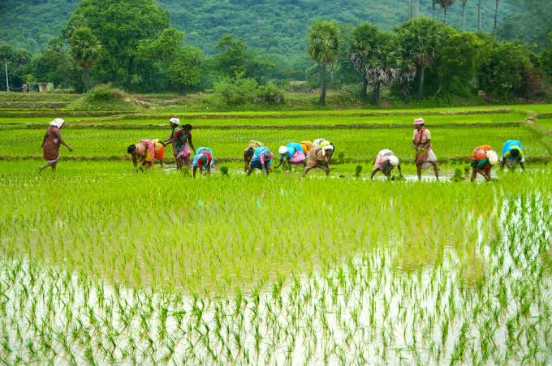

Pre-monsoon Rain Alert in Corridor 2
Tomatoes and perishable greens logged in Nodes 12–15 will take routing priority in CVRP dispatch batches today.

Enter yields for individual and offline marginal farmers.
Open Form →Combine crop crates within a 2–3 km radius for full-truck dispatches.
View Clusters →Monitor live vehicle positions and transit ETAs to bulk mandis.
Go to Transit Hub →Verify diesel advances and OTP-verified delivery settlement balances.
View Escrow →| Commodity | Mandi Modal Price | KrishiSetu Direct | Net Farmer Gain |
|---|---|---|---|
| 🍅 Tomato (Grade A) | ₹18 / kg | ₹26 / kg | +44.4% |
| 🧅 Onion (Nashik Red) | ₹22 / kg | ₹29 / kg | +31.8% |
| 🥔 Potato (Jyoti) | ₹14 / kg | ₹19 / kg | +35.7% |
| 🥬 Spinach / Leafy | ₹12 / kg | ₹18 / kg | +50.0% |
Tomatoes and perishable greens logged in Nodes 12–15 will take routing priority in CVRP dispatch batches today.
18 new micro-freight vehicles onboarded with automated fuel advance escrow support.
Direct institutional bulk orders received for Grade-A onions from suburban delivery hubs.